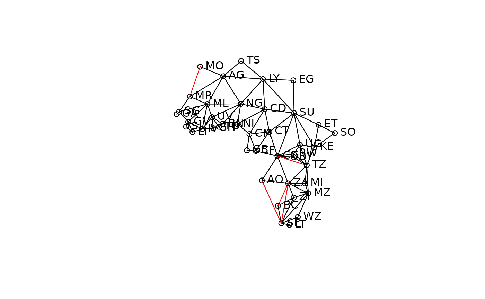

The afcon data frame has 42 rows and 5 columns, for 42 African countries, exclusing then South West Africa and Spanish Equatorial Africa and Spanish Sahara. The dataset is used in Anselin (1995), and downloaded from before adaptation. The neighbour list object africa.rook.nb is the SpaceStat rook.GAL, but is not the list used in Anselin (1995) - paper.nb reconstructs the list used in the paper, with inserted links between Mauritania and Morocco, South Africa and Angola and Zambia, Tanzania and Zaire, and Botswana and Zambia. afxy is the coordinate matrix for the centroids of the countries.
afconThis data frame contains the following columns:
x an easting in decimal degrees (taken as centroid of shapefile polygon)
y an northing in decimal degrees (taken as centroid of shapefile polygon)
totcon index of total conflict 1966-78
name country name
id country id number as in paper
Anselin, L. and John O'Loughlin. 1992. Geography of international conflict and cooperation: spatial dependence and regional context in Africa. In The New Geopolitics, ed. M. Ward, pp. 39-75. Philadelphia, PA: Gordon and Breach. also: Anselin, L. 1995. Local indicators of spatial association, Geographical Analysis, 27, Table 1, p. 103.
All source data files prepared by Luc Anselin, Spatial Analysis Laboratory, Department of Agricultural and Consumer Economics, University of Illinois, Urbana-Champaign.
data(afcon)
if (requireNamespace("spdep", quietly = TRUE)) {
library(spdep)
plot(africa.rook.nb, afxy)
plot(diffnb(paper.nb, africa.rook.nb), afxy, col="red", add=TRUE)
text(afxy, labels=attr(africa.rook.nb, "region.id"), pos=4, offset=0.4)
moran.test(afcon$totcon, nb2listw(africa.rook.nb))
moran.test(afcon$totcon, nb2listw(paper.nb))
geary.test(afcon$totcon, nb2listw(paper.nb))
}
#> Loading required package: sf
#> Linking to GEOS 3.8.0, GDAL 3.0.4, PROJ 6.3.1; sf_use_s2() is TRUE

#>
#> Geary C test under randomisation
#>
#> data: afcon$totcon
#> weights: nb2listw(paper.nb)
#>
#> Geary C statistic standard deviate = 2.8988, p-value = 0.001873
#> alternative hypothesis: Expectation greater than statistic
#> sample estimates:
#> Geary C statistic Expectation Variance
#> 0.58395772 1.00000000 0.02059931
#>